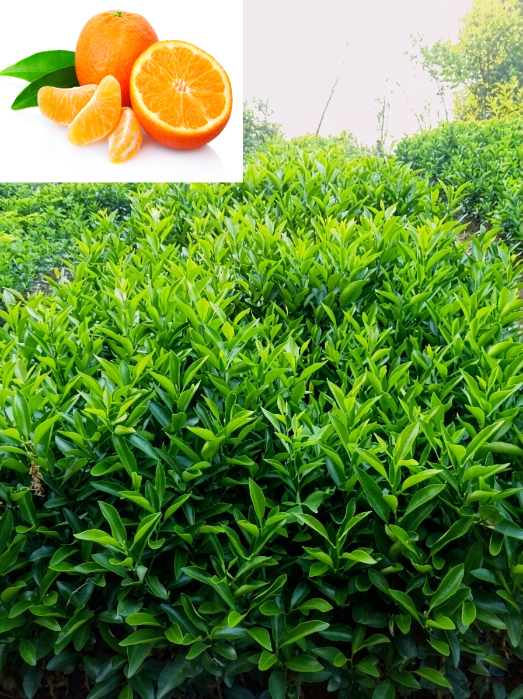

मंगला कृषि तथा पशुपन्छी फार्म
Salyan, Bagchaur-9, Nepal(Karnali Province)
📞 +977-9869482949
Fruit plants, grafted seedlings & agro nursery products in Nepal
Mangala Agro Farm is a fruit nursery and agricultural enterprise located in Bagchaur-9, Salyan, Nepal. We are committed to producing healthy, high-quality fruit plants and grafted seedlings that help farmers, gardeners, and agricultural enthusiasts achieve better productivity. Our nursery specializes in a variety of fruit and agroforestry plants, including Orange (Suntala), Lemon (Kagati), Junar, Kiwi, Loquat (Haluwabed), Timur, Walnut (Okhar), and other seasonal plants. We focus on proper plant care, quality nursery management, and sustainable farming practices to ensure strong growth and long-term success for our customers. Through dedication, quality service, and a passion for agriculture, Mangala Agro Farm aims to contribute to rural development and support the growth of modern, productive, and environmentally friendly farming in Nepal.



📍 Salyan, Bagchaur-9, Nepal
📞 +977-9869482949
✉️ mangala.agrofarm35@gmail.com